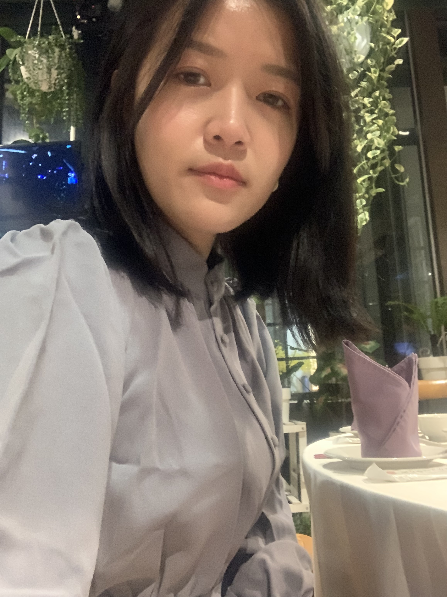

Summary
System consulting and system analysis professional with eight years of experience specializing in ERP/POS/CRM planning and execution within the retail industry. Demonstrates strong skills in data modeling, problem-solving, relationship management, business analysis (both qualitative and quantitative), and taking ownership of deliverables.
Work Experience
Senior Application Consultant
IBM, Taipei, Taiwan
Dec 2023 - Present
Responsibilities
- Lead technical consulting and implementation for enterprise clients
- Manage project lifecycle and stakeholder relationships
- Provide technical solutions and architecture design
Key Projects
- Project A: Led system integration for major retail client
- Project B: Implemented cloud migration strategy
- Project C: Developed custom ERP solutions
Senior System Analyst
NEC, Taipei, Taiwan
Apr 2017 - Dec 2023
Responsibilities
- Managed ERP/POS/CRM implementation projects
- Conducted system analysis and requirement gathering
- Provided technical consultation and support
Key Projects
- Project:Customizing ERP System in the Retail Industry
- Designed a Shelving Allocation System to address business challenges through information technology.
- Customized ERP systems to support mobile payment solutions based on client requirements.
- Participated in software implementation, testing, deployment, training, and maintenance.
- Project:Product Classification Project
- Analyzed product characteristics and developed classification models to enhance product selection efficiency.
- Defined business processes and application rules for consigned products, new products, DM products, and shelving allocation principles.
- Established classification benchmarks and executed product reclassification.
System Consultant
Digiwin Software Co., Ltd., Taipei, Taiwan
Mar 2014 - Jul 2016
- Provided system consulting services to 20+ companies in retail, food manufacturing, and online shopping industries.
- Delivered technical and business application consultation to business partners and team members, focusing on functionality, architecture, operating systems, and databases.
- Analyzed and resolved process issues, prepared technical specifications, and implemented effective solutions.
Education
Master of Business Administration
National Taipei University of Technology, Taipei, Taiwan
Sep 2012 - Jun 2014
Bachelor's in Business Administration
Takming University of Technology, Taipei, Taiwan
Sep 2008 - Jun 2012
Technical Skills
- Database: Microsoft SQL Server, Orcale SQL
- Tools: NEC ERP/CRM, 鼎新ERP/POS, Tableau
Languages
- English Intermediate Level
- Japanese Intermediate Level
- Mandarin Native Level
Portfolio
The information is sourced from the digiwin website.
Successful System Implementation Case: Client - e-go Bus